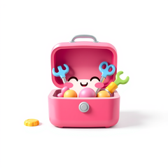

SugarCli
CLI presentation helpers

StatusLine, Banner, Section, Stage, HelpText, Frame, Logo — themed CLI presentation, down to a shared width budget. Library-only — no Symfony Console requirement. Drop into any Composer project to give CLI output the same look as the rest of the stack.
Install
composer require sugarcraft/sugar-cliQuickstart
What's in the box
StatusLine
success / error / warn / info / prompt static helpers — themed glyph + space + message. Only the glyph is styled; the message stays plain, and an over-long message is clipped with … to the width budget.BannerBordered title block with optional subtitle, rounded by default. Useful for app intros /
--version output. Title and subtitle are single display lines — embedded escapes, newlines and control bytes are stripped.ThemePalette of
SugarCraft\Style\Style objects keyed by status level. Theme::ansi() ships the colourful palette and Theme::plain() strips it; charm() / dracula() / nord() / catppuccin() are fixed presets, Theme::auto($bg) adapts to the reported background only when the app passes the parsed OSC-11 reply it requested via Cmd::requestBackgroundColor() — without a message it is ansi(), and Theme::byName() resolves the roster. Theme::detect() downgrades the palette to what the output can show via sugar-core's ColorProfile::detect() — its ladder resolves CLICOLOR_FORCE / FORCE_COLOR first (they outrank a non-tty pipe and TERM=dumb), otherwise no escape bytes when STDOUT is not a tty, NO_COLOR drops colour but keeps bold (it outranks the force vars), and BSD CLICOLOR=0 drops colour unless forced. Every presenter called without a theme uses Theme::detect(); apply the same downgrade to a preset with withColorProfile().SectionOne-line themed dividers —
header() label + fill rule, bare rule(), indented subHeader(). An explicit width is a hard cap: an over-long label is cut with … rather than overflowing.StagePer-line step renderers — numbered
step(), subStep(), and subStepWithProgress() (bar or spinner; frame: pins the spinner glyph when bytes must be deterministic). Same width budget as StatusLine; tree glyphs and bars are never clipped.HelpTextfang-shaped
--help page: USAGE (retitle via usageLabel), an optional description, and titled two-column key/description sections. Wraps to width (terminal width by default, null = never wrap): long descriptions continue at the description column, and switch to a stacked layout when the key column leaves fewer than MIN_DESCRIPTION_WIDTH (16) cells. renderRows() renders a bare grid; renderPage() a pre-composed page.FrameFull-screen chrome: double-line box, centred title, dividers, status bar — normalised to exactly
rows lines, padded ANSI-aware so it never overflows. Titles and body may carry inline SGR; every other escape or control byte is stripped at ingress.LogoUnicode box-drawing text art —
Logo::sugarcraft() preset (66 cells wide) and Logo::fromAscii($art) for custom pages. Control bytes are stripped on ingress; withColor() tints (replaces, idempotent).AutoWidthThe shared
int | AutoWidth | null width sentinel: Auto resolves the exported COLUMNS (else 80 cells; implausible values discarded), an int is exact, null means no cap.Source & demos
- Source on GitHub
- Full README
- Runnable examples
- Originally inspired by fang (Go); SugarCraft is developed as a native PHP project.
API
| Class | Method | Description |
|---|---|---|
| StatusLine | success(msg, ?theme, width = Auto) | Render a success line (error/warn/info/prompt are the same shape) |
| Banner | title(title, subtitle = '', ?theme, ?border, ?width) | Bordered title banner (control bytes stripped from caller text) |
| Section | header(label, ?theme, leftPad = 2, width = Auto, rune = '─') | Label + fill rule; a non-null width is a hard cap (long labels end in …) |
| Section | rule(?theme, width = Auto, rune = '─') / subHeader(label, ?theme, indent = 4, width = Auto, rune = '·') | Bare divider / indented nested heading |
| Stage | step(n, total, msg, ?theme, glyph, width = Auto) | Numbered step line |
| Stage | subStep(msg, ?theme, isLast = false, indent = 2, width = Auto) / subStepWithProgress(msg, current, total, ?theme, isLast = false, indent = 2, width = Auto, ?frame) | Sub-step, and sub-step with a progress bar (total > 0) or spinner (frame pins the glyph) |
| HelpText | render(usage, sections, description = '', ?theme, width = Auto, usageLabel = 'USAGE') | Full --help page; wraps to width, null = never wrap, width < 1 throws |
| HelpText | renderRows(rows, ?theme, width = Auto) / renderPage(page, ?width) | One two-column block (stacked below MIN_DESCRIPTION_WIDTH = 16 cells) / a pre-composed page, never re-wrapped |
| Theme | ansi() / plain() / detect(?env, ?stream) / auto(?msg) | Colourful palette / no styling / palette downgraded to the stream's ColorProfile / background-adaptive |
| Theme | charm() / dracula() / nord() / catppuccin() / byName(name) / PRESET_NAMES | Fixed colour presets, the case-insensitive name resolver, and its roster |
| Theme | build() / withColorProfile(ColorProfile $profile) | Fluent builder (all seven slots required) / downgrade any theme to a colour profile |
| Frame | new() → withTitle(t) / withTitleText(t, style) / withStatus(s) / withBorderStyle(style) → render(body, cols, rows) | Exactly-rows full-screen box; SGR-preserving ingress sanitation |
| Logo | sugarcraft() / fromAscii(art) / withColor(color) / render() | Unicode box-drawing art preset / custom page (newlines are the layout) / replaceable tint / styled render |